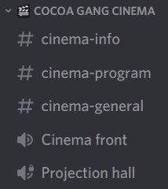

Jak se účastnit
Jak se připojit na VC

- hlavní VC (Projection hall) je uzamčený aby se předešlo rušení promítání
- pro připojení se k ostatním do hlavního VC se nejdříve připoj na Cinema front
- do Projection hall VC tě přesunu pokud se máš s ostatními na něco dívat (tak aby tam nebyl někdo navíc a nerušil)